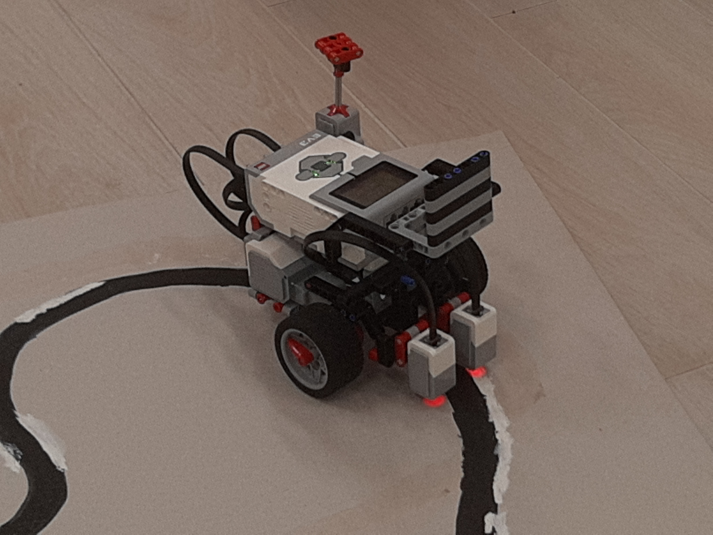

Könyvek
Képek



Programok
- Makecode példa1 MicroPython példa1
- Makecode példa2 MicroPython példa2
- Makecode példa3 MicroPython példa3
- Makecode példa4 MicroPython példa4
- Makecode példa5 MicroPython példa5
- Makecode példa6 MicroPython példa6
- Makecode példa7 MicroPython példa7
- Makecode példa8 MicroPython példa8
- Makecode példa9 MicroPython példa9
- Makecode példa10 MicroPython példa10